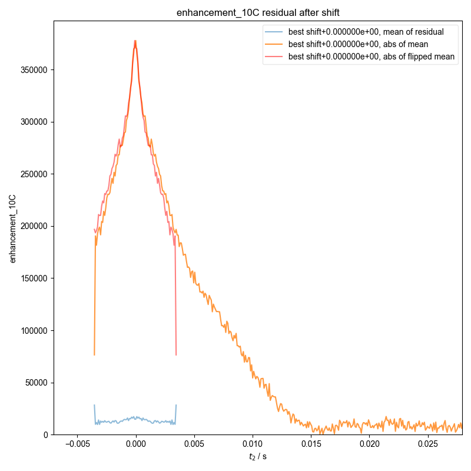
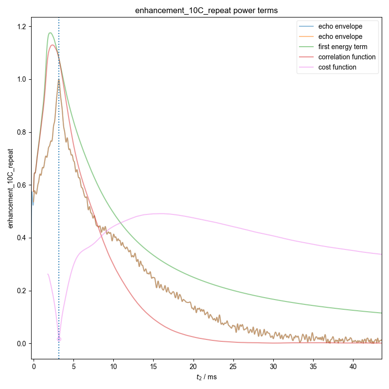
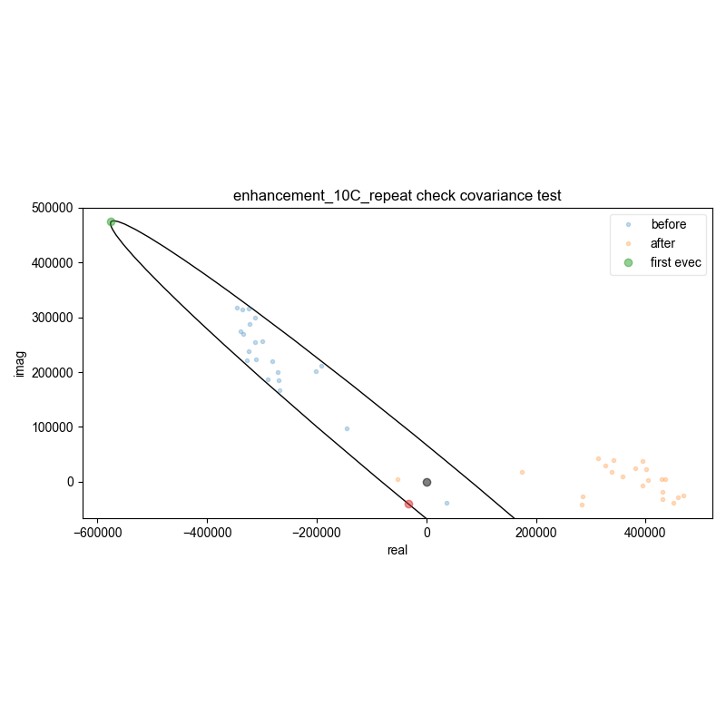
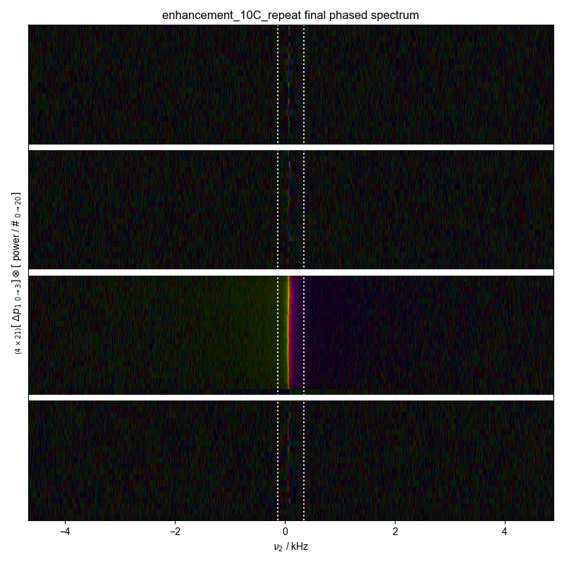
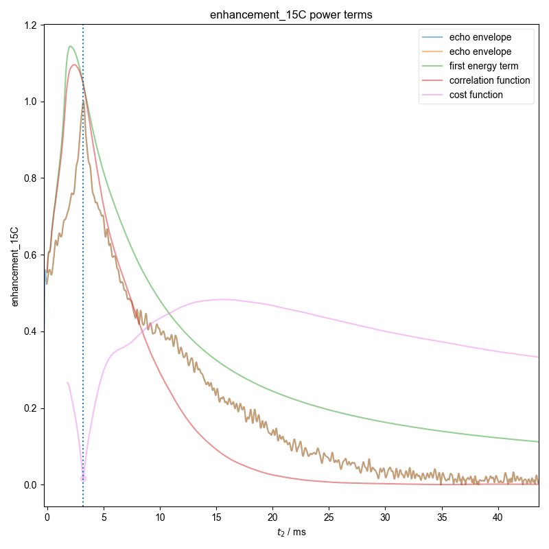
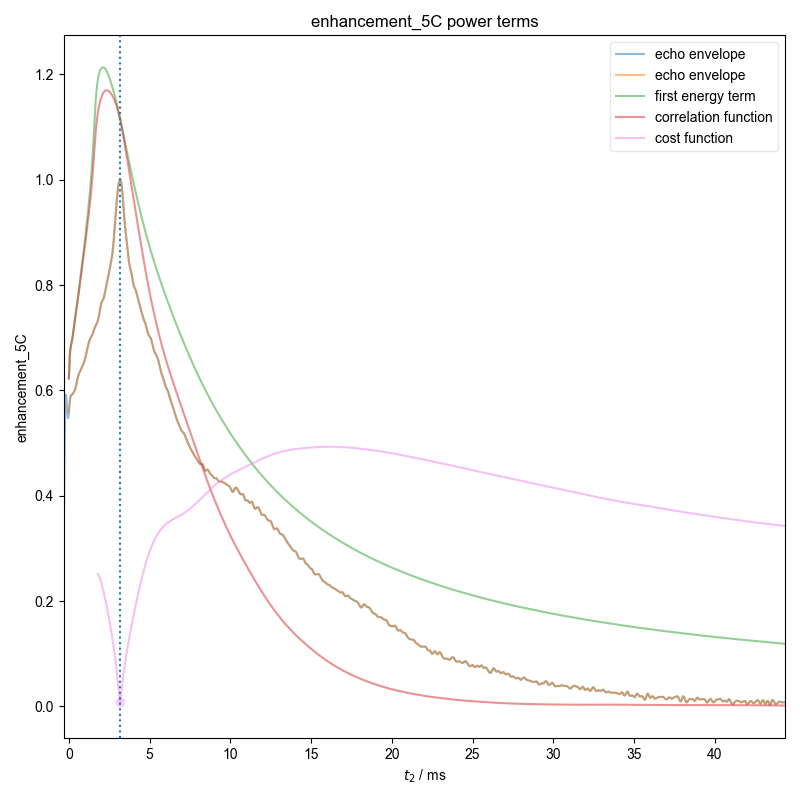
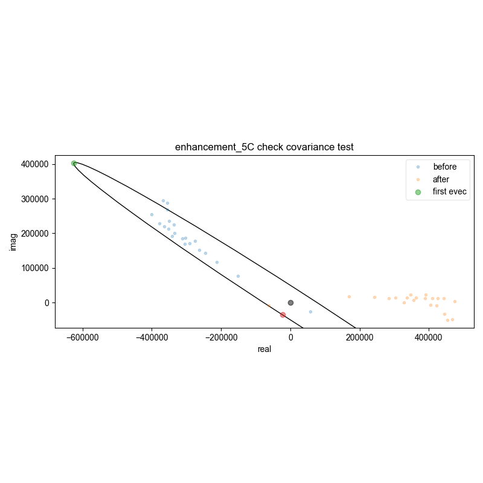

Note
Go to the end to download the full example code
FID from Echo after Phasing and Timing Correction¶
Demonstrate how we can automatically find the zeroth order phase and the center of the echo and then slice, in order to get a properly phased FID. Here we see this
This example provides a relatively routine example.

- 

- 
- 
- 
- 
- 
- 
---------- logging output to /home/jmfranck/pyspecdata.0.log ----------
You didn't set units for power before saving the data!!!
/home/jmfranck/git_repos/proc_scripts/pyspecProcScripts/load_data.py:567: RuntimeWarning: invalid value encountered in divide
s.getaxis("power") / prog_power,
peakrange [-134.95278479 429.39522435]
You didn't set units for power before saving the data!!!
peakrange [-134.95278479 343.51617948]
You didn't set units for power before saving the data!!!
peakrange [-208.56339468 294.44243955]
You didn't set units for power before saving the data!!!
peakrange [-220.83182966 429.39522435]
You didn't set units for power before saving the data!!!
/home/jmfranck/git_repos/pyspecdata/pyspecdata/figlist.py:418: RuntimeWarning: More than 20 figures have been opened. Figures created through the pyplot interface (`matplotlib.pyplot.figure`) are retained until explicitly closed and may consume too much memory. (To control this warning, see the rcParam `figure.max_open_warning`). Consider using `matplotlib.pyplot.close()`.
fig = plt.figure(num_figs_before_add + 1, **kwargs)
peakrange [-134.95278479 343.51617948]
1: enhancement_10C autoslicing!
2: enhancement_10C power terms |||ms
3: enhancement_10C check covariance test
4: enhancement_10C residual after shift
5: enhancement_10C final phased spectrum |||('kHz', None)
6: enhancement_10C_repeat autoslicing!
7: enhancement_10C_repeat power terms |||ms
8: enhancement_10C_repeat check covariance test
9: enhancement_10C_repeat residual after shift
10: enhancement_10C_repeat final phased spectrum |||('kHz', None)
11: enhancement_15C autoslicing!
12: enhancement_15C power terms |||ms
13: enhancement_15C check covariance test
14: enhancement_15C residual after shift
15: enhancement_15C final phased spectrum |||('kHz', None)
16: enhancement_21C autoslicing!
17: enhancement_21C power terms |||ms
18: enhancement_21C check covariance test
19: enhancement_21C residual after shift
20: enhancement_21C final phased spectrum |||('kHz', None)
21: enhancement_5C autoslicing!
22: enhancement_5C power terms |||ms
23: enhancement_5C check covariance test
24: enhancement_5C residual after shift
25: enhancement_5C final phased spectrum |||('kHz', None)
import pyspecdata as psd
import pyspecProcScripts as pypcs
import matplotlib.pyplot as plt
from pyspecProcScripts.load_data import lookup_table
psd.init_logging(level="info")
plt.rcParams["image.aspect"] = "auto" # needed for sphinx gallery
# sphinx_gallery_thumbnail_number = 1
signal_pathway = {"ph1": 1}
with psd.figlist_var(file_name="tempdata220922final.pdf") as fl:
for nodename in [
"enhancement_10C",
"enhancement_10C_repeat",
"enhancement_15C",
"enhancement_21C",
"enhancement_5C",
]:
d = psd.find_file(
"211103_TEMPOL_269uM_HeatExch.h5",
exp_type="ODNP_NMR_comp/ODNP",
postproc="spincore_ODNP_v1",
lookup=lookup_table,
expno=nodename,
) # returns signal with t=0 set approximately correctly
fl.basename = nodename
d = pypcs.fid_from_echo(d, signal_pathway, fl=fl)
fl.next("final phased spectrum")
fl.image(d)
# in the following, I assume the units are auto-scaled to kHz
print("peakrange", d.get_prop("peakrange"))
plt.axvline(x=d.get_prop("peakrange")[0] / 1e3, color="w", ls=":")
plt.axvline(x=d.get_prop("peakrange")[1] / 1e3, color="w", ls=":")
Total running time of the script: (0 minutes 12.416 seconds)